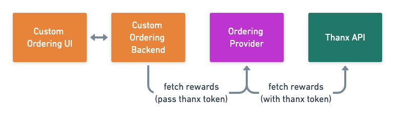

Custom Ordering UI with Thanx Reward Integration API Reference
This document provides guidance for merchants interested in building their own ordering UI with an ordering provider like Olo. There is actually no integration required outside of the Thanx SSO integration, as the ordering providers like Olo have already implemented this integration as documented in the Thanx Loyalty API docs.

After the custom ordering UI authenticates the Thanx User (described in the Thanx SSO docs, the Thanx token is passed to the ordering provider. The ordering provider in turn uses that access token to fetch qualifying rewards from the Thanx APIs.
Here are some example Olo requests that demonstrate this behavior:
Exchange Thanx Token for Olo Token:
POST /users/getorcreate
{
provider: 'thanx', # name of loyalty provider
providertoken: '...', # thanx access token
provideruserid: '...' # thanx user id
}
Fetch Thanx Rewards:
GET /baskets/{uid}/loyaltyrewards/qualifying?authtoken={olo token}&...